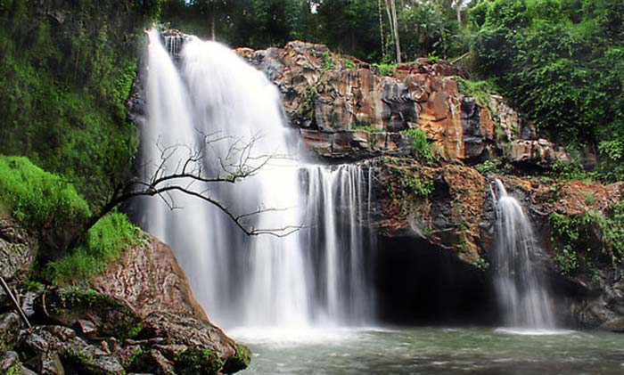

Air Terjun Tegenungan
Lokasi Air Terjun Tegenungan Gianyar Bali
Objek wisata air terjun Tegenungan Gianyar juga memiliki nama lain yaitu air terjun Kemenuh, karena berada di desa Kemunuh kabupaten Gianyar. Alamat atau Lokasi dari air terjun Kemenuh, berada di Desa Kemenuh yang merupakan wilayah Kecamatan Sukawati, Kabupaten Gianyar. Untuk melihat lokasi pasti dan mengetahui jalan menuju air terjun
Dilihat dari peta, maka lokasi air terjun Tegenungan adalah lokasi air terjun yang terdekat dengan Bali Selatan. Sebagian besar air terjun di Bali berlokasi di daerah pengunungan atau daerah yang memiliki dataran tinggi, tetapi air terjun Tegenungan, satu-satunya yang berada di dataran rendah.
Jika anda menginap di kawasan wisata Kuta, untuk mencapai lokasi dari air terjun Kemenuh akan ditempuh dalam kurun waktu 1 jam, tentunya jalan dalam kondisi normal atau tidak macet.
Jaraknya adalah 34 kilometer, untuk melihat peta rute dari Kuta silakan klik link ini, rute ke air terjun Kemenuh dari Kuta. Lokasinya tidak berada di tepi jalan, agar anda menemukan lokasi dari air terjun Kemenuh, anda perlu menuruni anak tangga yang jumlahnya ratusan dari tempat parkir, sampai anda menemukan bibir sungai Petanu.
Untuk menuruni ratusan anak tangga, tidak begitu terasa capeknya. Tapi saat anda harus kembali ke tempat parkir kendaraan maka anda harus menaiki anak tangga yang jumlahnya ratusan. Di sinilah ketahanan stamina anda di uji. Jadi jika anda kurang kuat untuk menaiki anak tangga, kami tidak sarankan anda untuk mengunjungi tempat wisata air terjun ini.
Air terjun Tegenungan, memiliki tinggi kira-kira 4 meter, tapi memiliki debit air yang lumayan banyak. Air di lokasi air terjun Kemenuh sangat jernih dan cocok buat anda yang sekedar ingin bermain air atau mandi. Di lokasi air terjun ini, anda juga dapat melihat pura dan pancoran air yang berasal dari mata air.
gambaran pancoran air terjun kemenuh
Fasilitas, Tiket Masuk & Tempat Parkir
Objek wisata air terjun Tegenungan kurang mendapat perawatan, jadi terkesan kurang rapi dan bersih. Hal ini akan terlihat pada saat anda sudah sampai di tempat parkir kendaraan. Di sepanjang areal sungai, juga banyak pohon yang telah ditebang dan ada sampah yang berserakan.
Khusus di areal parkir, anda akan melihat adanya warung-warung sederhana yang menjual makanan dan minuman. Untuk tiket masuk anda akan tidak akan dikenakan biaya. Dulu saat di tempat ini ada wisata bunjee jumping, anda akan dikenakan biaya tiket masuk sebesar Rp 4.000 untuk dewasa dan anak-anak sebesar Rp 2.000. Wisata bunjee jumping saat ini sudah tidak ada lagi di lokasi wisata air terjun Kemenuh.